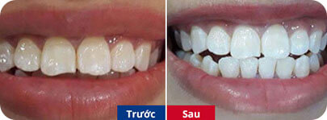

15.000 người sở hữu nụ cười trắng sáng
sau khi tẩy trắng răng tại nha khoa Paris
Bích Hằng (Hải Phòng)
Tình trạng Răng bị ố vàng do ăn nhiều
thực phẩm có màu, như cafe, uống chè Chỉ định dịch vụ Sử
dụng công nghệ Tẩy trắng Whitemax tại phòng khám

Thu Giang (Đà Nẵng)
Tình trạng Răng bị ố vàng do tuổi
tác Chỉ định dịch vụ Sử dụng công nghệ Tẩy trắng
Whitemax tại phòng khám
Khánh Chi (Hà Nội)
Tình trạng Răng kém sáng bóng, không được
trắng Chỉ định dịch vụ Sử dụng công nghệ Tẩy trắng
Whitemax tại phòng khám
Tuyết Nhung (HCM)
Tình trạng Răng bị nhiễm màu nhẹ, lốm đốm,
không đều màu Chỉ định dịch vụ Sử dụng công nghệ Tẩy
trắng Whitemax tại phòng khám kết hợp
với tẩy trắng răng bằng máng tại nhà